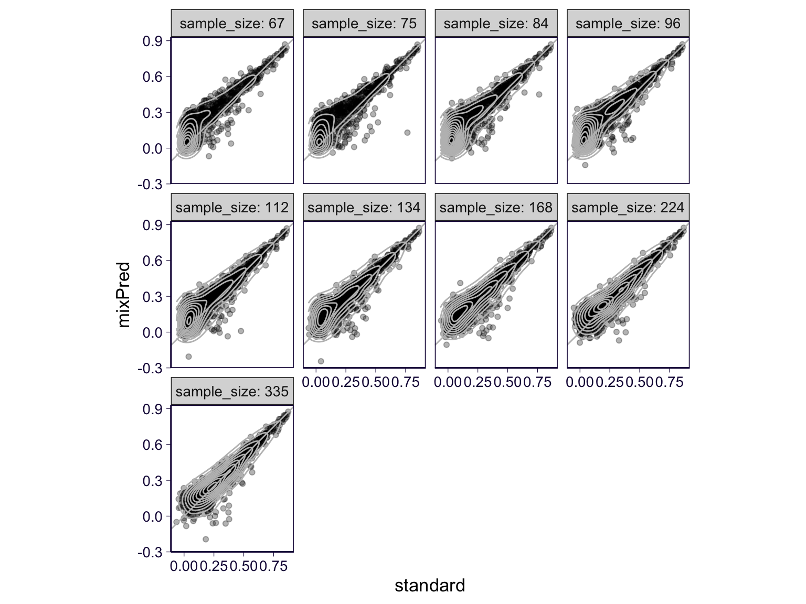
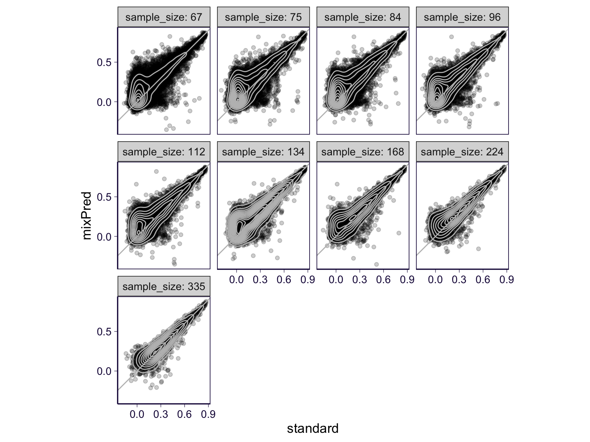
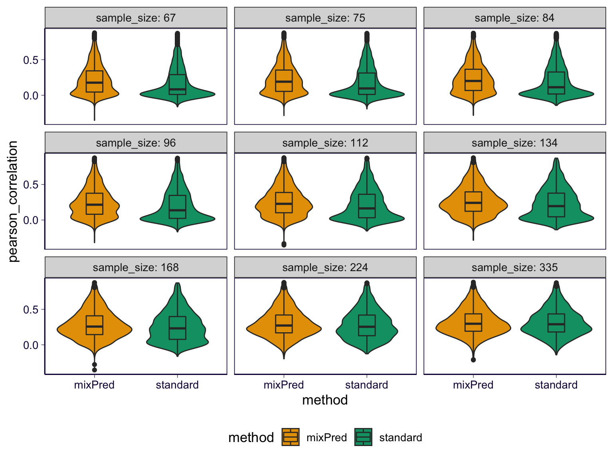

rm(list = ls())
library(ggplot2)
theme_set(theme_bw(base_size = 13))
library(dplyr)
library(reshape2)
library(data.table)
library(pander)
options(datatable.fread.datatable = FALSE)
options(stringsAsFactors = FALSE)
panderOptions('table.split.table', Inf)
source('../code/rlib_analysis.R')
datadir = '/Users/yanyul/Desktop/mixqtl-pipeline-results/postprocess-prediction'
cbPalette <- c('ascQTL' = "#999999", 'mixPred' = "#E69F00", 'trcQTL' = "#56B4E9", 'standard' = "#009E73", "#F0E442", "#0072B2", "#D55E00", "#CC79A7")
source('https://gist.githubusercontent.com/liangyy/43912b3ecab5d10c89f9d4b2669871c9/raw/3ca651cfa53ffccb8422f432561138a46e93710f/my_ggplot_theme.R')
# th$panel.border = element_rect(colour = th$axis.line$colour)
ifrun = FALSERegress out covariates as usual on the full data. And split the data into 10-part or 2-part partitions. Run mixPred and nePred on each of the leave-one-part out data. And evaluate the performance on the held out one part of the data.
method_df = data.frame(method = c('mixpred', 'nepred'), tag = c('mixPred', 'standard'))
full_sample_size = 670
partitions = 2:10
out = list()
for(part in partitions) {
for(i in 1 : nrow(method_df)) {
if(part != 2) {
tmp_ = read.table(paste0(datadir, '/', 'Whole_Blood-x-indiv_partition-gtex_v8_whole_blood_partition_', part, '-performance-', method_df$method[i], '.txt.gz'), header = T, )
} else {
tmp_ = read.table(paste0(datadir, '/', 'Whole_Blood-x-indiv_partition-gtex_v8_whole_blood_partition_', part, '_old-performance-', method_df$method[i], '.txt.gz'), header = T, )
}
out[[length(out) + 1]] = tmp_ %>% mutate(method = method_df$tag[i], split = part, sample_size = ceiling(full_sample_size / part))
}
}
df = do.call(rbind, out)Median correlation across partitions.
p = df %>% group_by(gene, method, sample_size) %>% summarize(pearson = median(pearson_correlation)) %>% select(gene, pearson, method, sample_size) %>% dcast(gene + sample_size ~ method, value.var = 'pearson') %>% ggplot(aes(x = standard, y = mixPred)) + geom_point(alpha = .3) + geom_density2d(color = 'gray') + geom_abline(slope = 1, intercept = 0, color = 'gray') + facet_wrap(~sample_size, labeller = label_both, ncol=4) + th2 + coord_equal()## `summarise()` regrouping output by 'gene', 'method' (override with `.groups` argument)## Warning in dcast(., gene + sample_size ~ method, value.var = "pearson"): The dcast generic in data.table
## has been passed a grouped_df and will attempt to redirect to the reshape2::dcast; please note that
## reshape2 is deprecated, and this redirection is now deprecated as well. Please do this redirection
## yourself like reshape2::dcast(.). In the next version, this warning will become an error.p 
ggsave(filename = '../output/gtex-v8-pipeline-mixpred-with-gene-qc-pearson_new.png', height = 6, width = 8)All pairwise comparison.
df %>% select(gene, pearson_correlation, method, partition, sample_size) %>% dcast(gene + partition + sample_size ~ method , value.var = 'pearson_correlation') %>% ggplot(aes(x = standard, y = mixPred)) + geom_point(alpha = .2) + geom_density2d(color = 'gray') + geom_abline(slope = 1, intercept = 0, color = 'gray') + facet_wrap(~sample_size, labeller = label_both, ncol=4) + th2 + coord_equal()## Warning in dcast(., gene + partition + sample_size ~ method, value.var = "pearson_correlation"):
## The dcast generic in data.table has been passed a data.frame and will attempt to redirect to the
## reshape2::dcast; please note that reshape2 is deprecated, and this redirection is now deprecated as
## well. Please do this redirection yourself like reshape2::dcast(.). In the next version, this warning will
## become an error.
As violin plot.
p = df %>% select(gene, pearson_correlation, method, partition, sample_size) %>% ggplot(aes(x = method, y = pearson_correlation, fill = method)) + geom_violin() + geom_boxplot(width = .2) + facet_wrap(~sample_size, labeller = label_both) + th2 + scale_fill_manual(values = cbPalette) + theme(legend.position = 'bottom')
p 
# ggsave(filename = '../output/gtex-v8-pipeline-mixpred-with-gene-qc-pearson-violin_new.png', height = 4, width = 7)p = df %>% select(gene, pearson_correlation, method, partition, sample_size) %>% ggplot(aes(x = factor(sample_size), y = pearson_correlation, fill = method)) + geom_violin(position = position_dodge(width=0.8), alpha = 0.5) + geom_boxplot(width = .2, position = position_dodge(width=0.8), alpha = 0.5) + th + scale_fill_manual(values = cbPalette) + theme(legend.position = 'bottom') +
ylab('Pearson\'s correlation') + xlab('Sample size')
ggsave(filename = '../output/gtex-v8-pipeline-mixpred-with-gene-qc-pearson-violin_new.png', height = 3, width = 6)
ggsave(filename = '../output/gtex-v8-pipeline-mixpred-with-gene-qc-pearson-violin_new.pdf', height = 3, width = 6)Paired t-test
perform_t_test = function(method, gene, score) {
df = data.frame(method, gene, score)
df1 = df %>% filter(method == 'mixPred')
df2 = df %>% filter(method == 'standard')
dd = inner_join(df1, df2, by = 'gene')
res = t.test(dd$score.x, dd$score.y, paired = T)
return(data.frame(pairwise_diff = res$estimate, diff_ci95_low = res$conf.int[1], diff_ci95_high = res$conf.int[2], pval = res$p.value, median_mixpred = median(dd$score.x), median_standard = median(dd$score.y)))
}tmp = df %>% group_by(gene, method, sample_size) %>% summarize(pearson = median(pearson_correlation)) %>% select(gene, pearson, method, sample_size) %>% ungroup() %>% group_by(sample_size) %>% do(perform_t_test(.$method, .$gene, .$pearson))## `summarise()` regrouping output by 'gene', 'method' (override with `.groups` argument)oldnames = colnames(tmp)
tmp$nfold = round(670 / tmp$sample_size)
tmp = tmp[, c('nfold', oldnames)]
tmp %>% pander| nfold | sample_size | pairwise_diff | diff_ci95_low | diff_ci95_high | pval | median_mixpred | median_standard |
|---|---|---|---|---|---|---|---|
| 10 | 67 | 0.05208 | 0.04687 | 0.0573 | 1.318e-72 | 0.1753 | 0.07011 |
| 9 | 75 | 0.04952 | 0.04386 | 0.05518 | 4.828e-58 | 0.1854 | 0.07935 |
| 8 | 84 | 0.04889 | 0.04357 | 0.05422 | 4.569e-63 | 0.198 | 0.1003 |
| 7 | 96 | 0.0473 | 0.04187 | 0.05274 | 1.35e-57 | 0.2141 | 0.1189 |
| 6 | 112 | 0.04332 | 0.0381 | 0.04854 | 4.884e-53 | 0.228 | 0.1519 |
| 5 | 134 | 0.0362 | 0.03104 | 0.04136 | 1.483e-39 | 0.2413 | 0.1953 |
| 4 | 168 | 0.02762 | 0.02278 | 0.03246 | 1.791e-27 | 0.2514 | 0.2192 |
| 3 | 224 | 0.01657 | 0.01198 | 0.02115 | 2.535e-12 | 0.2663 | 0.2536 |
| 2 | 335 | 0.006543 | 0.002176 | 0.01091 | 0.003354 | 0.2919 | 0.2868 |
tmp %>% write.csv('../output/gtex-v8-pipeline-mixpred-with-gene-qc-pearson-pairwise-ttest.csv', quote = F)
print(xtable::xtable(tmp,
type = "latex",
digits = 3,
display = c('s', 'd', 'd', 'f', 'f', 'f', 'e', 'f', 'f')
),
include.rownames = FALSE,
file = "../output/gtex-v8-pipeline-mixpred-with-gene-qc-pearson-pairwise-ttest.tex"
)